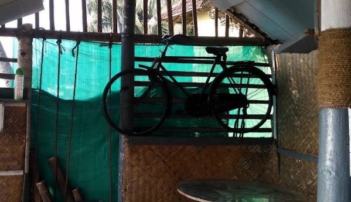

Sea-side, Thalassery.
Near Overbury’s Folly, with waves, salt air, and sunset colour just beyond the tables.
Coastal Café 1976 brings the unhurried feeling of a neighbourhood chaayakada to the Thalassery shoreline.

We’re a small, independent café shaped by the place around us: Thalassery’s food, the breeze off the Arabian Sea, and evenings that deserve one more cup.
Come for the kallummakkaya and chaya. Stay for the view, the easy company, and the golden light over the water.
A familiar kind of good, right by the sea.
Near Overbury’s Folly, with waves, salt air, and sunset colour just beyond the tables.
Homestyle snacks and local favourites, from stuffed mussels to a warm plate of unnakaya.
Casual, affordable, and full of old-school chaayakada character. Pull up a chair and settle in.